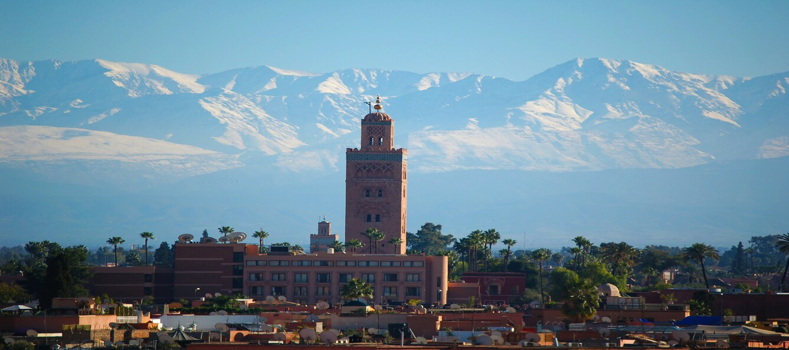

Edge4Future 2025
October 20, 2025 - Marrakech, Morocco
Home
CfP
Committees
Paper Submission
Edge4Future - Committees
Workshop co-chairs
Lylia Alouache, CY Cergy Paris Université, France
Stéphane Delbruel, University of Bordeaux - LaBRI, France
Sassi Maaloul, Junia, France
Leo Mendiboure, Université Gustave Eiffel, France
TPC members
To be updated once workshop organization validated
Webmaster Chair
Romain Dulout, Université de Poitiers, France